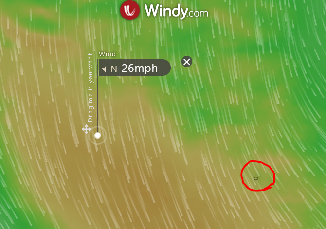

G'morning
It appears that landfall is still a couple days
out, the winds are not being helpful (some of the worst waters
to sail on the planet). Beating across the winds, is slow, then
the last burst of speed at the turn (if the winds stay
constant). If you're not used to sailing, it's less than fun.
Presuming they CAN make it onto the island, with
their (stated) expected 2 days of set up; we're looking at ~Thu,
maybe Fri as the potential start.
I took the lat/long from the last waypoint, entered them into windy.com (can do the same thing to determine gridsquare on another page).
73,
Rick nk7i
